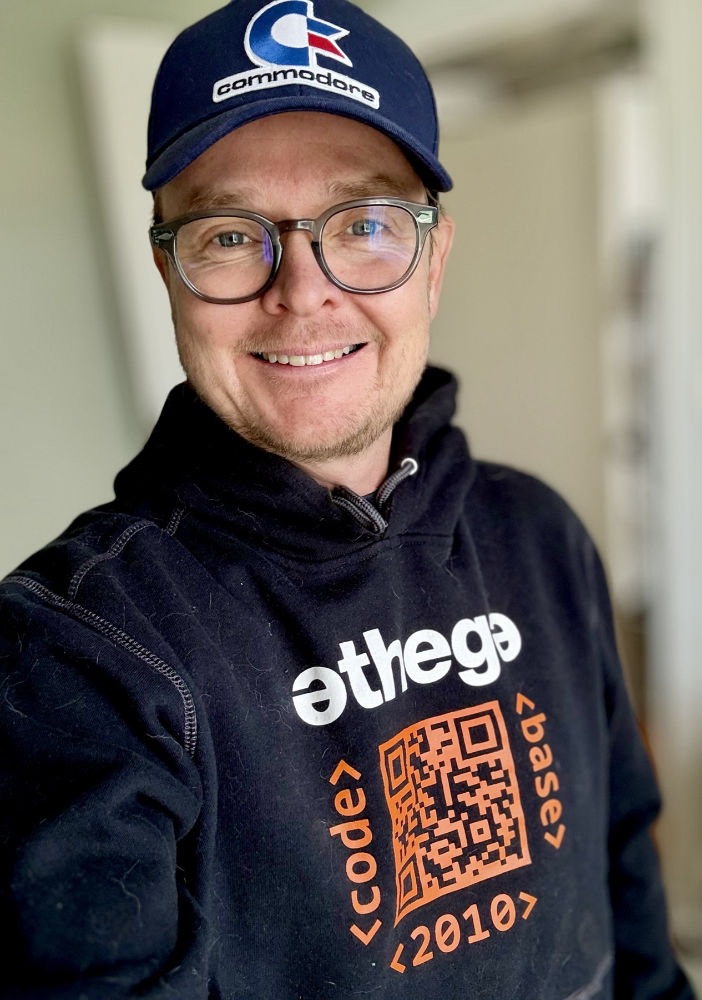
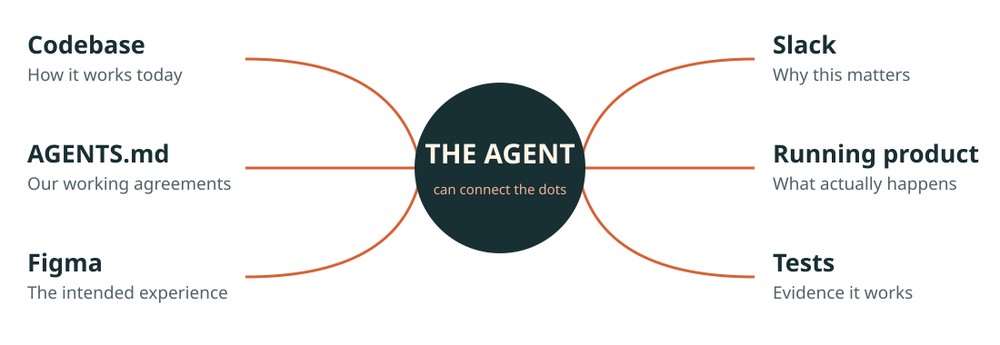
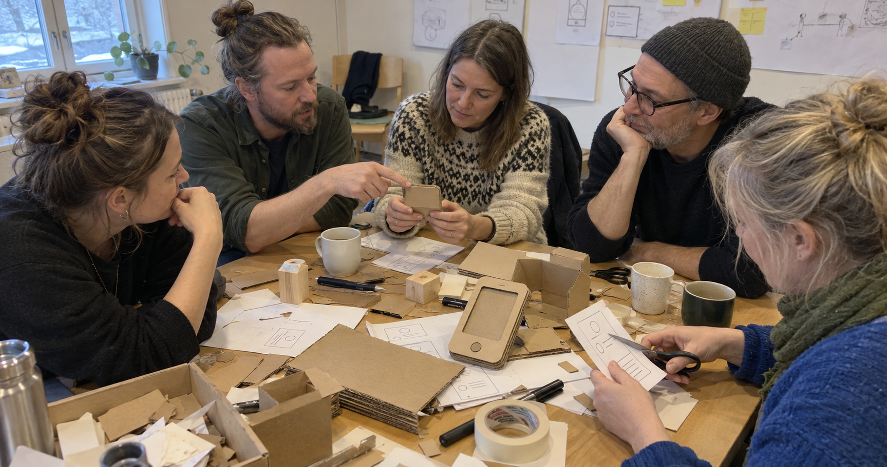
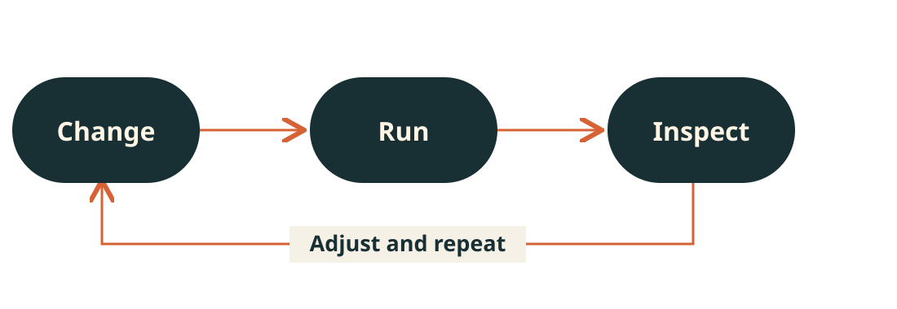
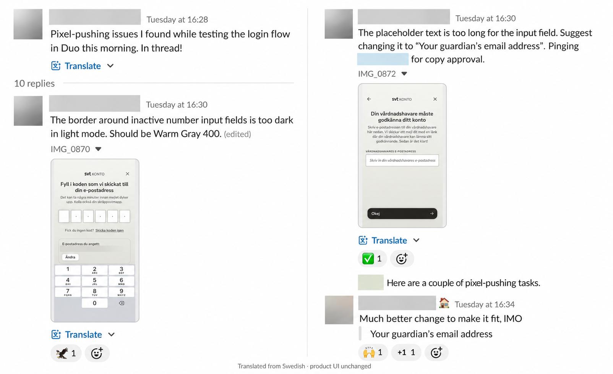
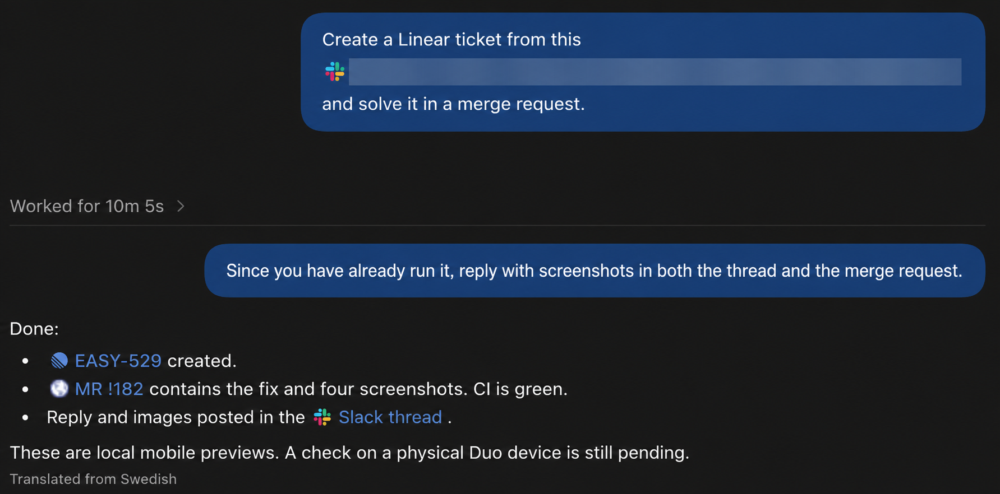
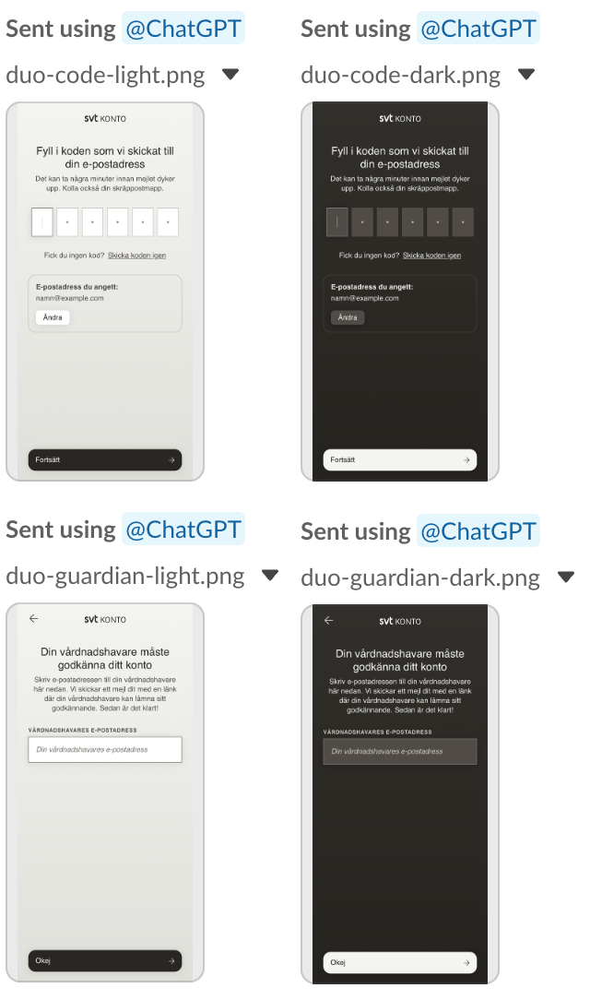
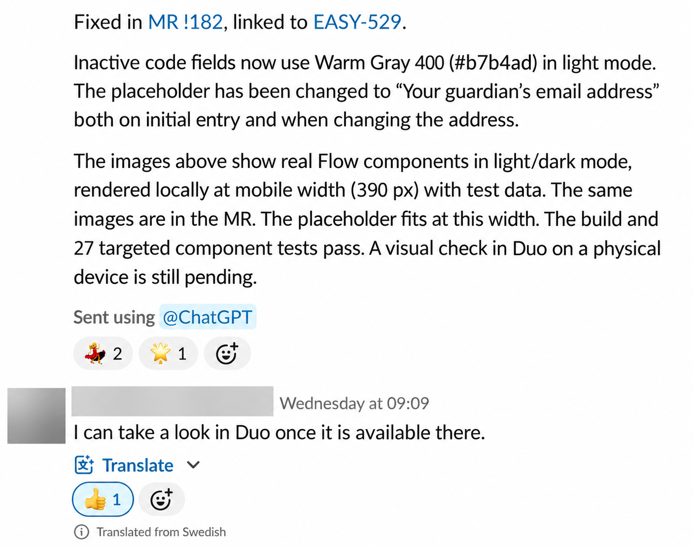
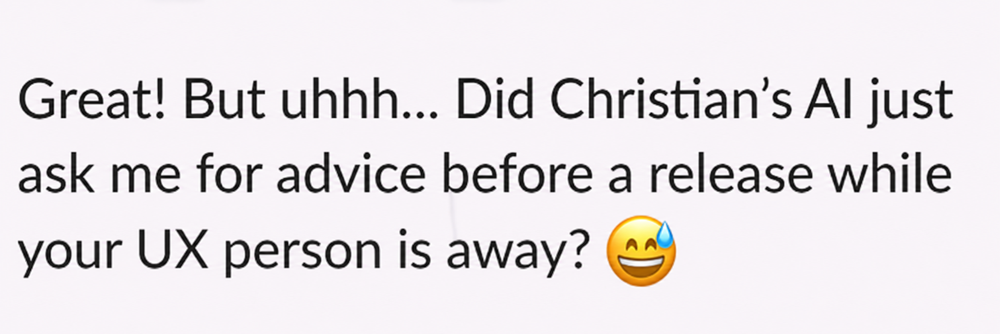

<style> :root { --r-main-font: 'Avenir Next', 'Trebuchet MS', sans-serif; --r-heading-font: 'Avenir Next', 'Trebuchet MS', sans-serif; --r-main-font-size: 36px; --r-background-color: #f6f1e6; --r-main-color: #182f33; --r-heading-color: #182f33; --r-link-color: #a34422; } .reveal { background: #f6f1e6; color: #182f33; } .reveal .slides { text-align: left; } .reveal .slides > section { box-sizing: border-box; height: 720px; padding: 48px 64px; } .reveal h1,.reveal h2,.reveal h3 { background: none; -webkit-text-fill-color: currentColor; color: #182f33; text-transform: none; font-weight: 700; letter-spacing: -.045em; line-height: 1.08; max-width: 100%; margin: 0 0 25px; } .reveal h1 { font-size: 72px; } .reveal h2 { font-size: 57px; } .reveal h3 { font-size: 34px; } .reveal p,.reveal li { color: #182f33; font-size: 28px; font-weight: 400; line-height: 1.4; } .reveal .slides .kicker,.reveal .slides > section:first-child .kicker { font: 15px 'Menlo',monospace; letter-spacing: .12em; text-transform: uppercase; color: #825139; margin: 0 0 30px; } .reveal .slides .small { font-size: 18px; color: #506268; } .reveal .slides .lead { font-size: 34px; line-height: 1.3; } .reveal .slides .accent { color: #b54a25; } .reveal img { border: 0; background: none; box-shadow: none; margin: 0; max-width: 100%; max-height: 100%; } .reveal .diagram { width: 100%; height: 360px; object-fit: contain; display: block; } .reveal .dark { background: #182f33; } .reveal .dark h1,.reveal .dark h2,.reveal .dark p { color: #f6f1e6; } .reveal .dark .kicker { color: #f0b393; } .reveal .dark .accent { color: #f0b393; } .reveal .big-question { font-size: 91px; margin-top: 55px; max-width: 1050px; } .reveal .intro { display: grid; grid-template-columns: 1.4fr 1fr; gap: 60px; align-items: center; } .reveal .intro img { height: 420px; width: 100%; object-fit: contain; } .reveal .slides > section:first-child .intro p { font-size: 28px; color: #182f33; line-height: 1.4; } .reveal .intro .name { font-size: 76px; } .reveal .intro .affiliation { display: flex; align-items: center; gap: 18px; } .reveal .intro .athega-mark { width: 132px; height: 36px; object-fit: contain; } .reveal .client-label { font: 14px 'Menlo', monospace !important; color: #506268 !important; margin: 18px 0 12px !important; } .reveal .client-logos { display: grid; grid-template-columns: repeat(5, 1fr); gap: 18px 32px; align-items: center; justify-items: center; padding-top: 8px; } .reveal .brand-mark { display: flex; align-items: center; justify-content: center; height: 36px; width: 100%; } .reveal .brand-mark img { display: block; width: auto; max-width: 160px; height: 34px; object-fit: contain; margin: 0; } .reveal .pill { display: inline-block; border: 2px solid #b54a25; padding: 8px 16px; border-radius: 30px; font-size: 23px; margin-top: 22px; } .reveal .questions { display: grid; grid-template-columns: repeat(3, 1fr); gap: 48px; margin-top: 12px; } .reveal .questions > div { border-top: 2px solid #b54a25; padding-top: 12px; } .reveal .questions .question-label { font: 17px Menlo, monospace; color: #825139; margin: 0 0 10px; } .reveal .questions p { margin: 0; font-size: 25px; line-height: 1.3; } .reveal .hands-layout { display:grid; grid-template-columns: 660px 1fr; gap:48px; align-items:center; } .reveal .hands-layout figure { margin:0; } .reveal .hands-layout img { width:660px; height:340px; object-fit:cover; object-position:center top; display:block; } .reveal .hands-layout figcaption { font-size:13px; color:#506268; margin-top:6px; } .reveal .hands-layout figcaption a { color:inherit; } .reveal .hands-questions p { font-size:28px; line-height:1.25; margin:0 0 22px; padding-left:22px; border-left:2px solid #b54a25; } .reveal .hands-caption { font-size:30px; margin:20px 0 0; } .reveal .caption { font-size: 22px; margin: 10px 0 0; } .reveal .request-layout { display: grid; grid-template-columns: 760px 1fr; gap: 32px; align-items: center; } .reveal .request-layout img { width: 760px; height: 465px; object-fit: contain; } .reveal .request-layout p { font-size: 30px; } .reveal .shot { width: 100%; height: 490px; object-fit: contain; display: block; } .reveal .result-layout { display: grid; grid-template-columns: 280px 1fr; gap: 30px; height: 452px; align-items: center; } .reveal .result-layout img { width: 100%; height: 452px; object-fit: contain; } .reveal .closing { font-size: 84px; margin-top: 44px; max-width: 1100px; } .reveal .slide-number { color: #9c7868; font-family: 'Menlo',monospace; } .reveal .controls { color: #b54a25; } .reveal .progress span { background: #d66236; } @media print { .reveal .slides > section { -webkit-print-color-adjust: exact; print-color-adjust: exact; } } </style> <p class="kicker">eXtreme Collaboration · 30 October 2026 · A little story about teamwork</p> <div class="intro"><div><h1 class="name">Hi, I’m<br>Christian.</h1><p><span class="affiliation">Christian Lizell <span aria-hidden="true">·</span> </span>Working with SVT</p><p class="lead">Building software with<br>people and AI agents.</p></div><p></p></div> <p class="client-label">Some of the teams I’ve worked with</p> <div class="client-logos" aria-label="Selected organisations Christian has worked with"><span class="brand-mark"></span><span class="brand-mark"></span><span class="brand-mark"></span><span class="brand-mark"></span><span class="brand-mark"></span><span class="brand-mark"></span><span class="brand-mark"></span><span class="brand-mark"></span><span class="brand-mark"></span><span class="brand-mark"></span></div> Note: - Christian Lizell · Athega · working with SVT. - My work is shifting towards context, discussion and judgment. - Today: teamwork, illustrated by a real SVT login story. 00:00–00:30 · 30 seconds Hi, I’m Christian Lizell. I’m from Athega, and I work with SVT. My background is in building software, often in the media world. Lately, more of my work has become about giving agents context, discussing what we want, and judging the result. That has made me rethink what teamwork looks like. The photo is from the Code Base material; the story later in this talk is from the login work at SVT. --- <!-- .slide: class="dark" --> <p class="kicker">A question about teamwork</p> <h1 class="big-question">When agents write<br>the code, what do<br><span class="accent">we do together?</span></h1> <p class="lead">The keyboard used to give us a place to meet.</p> Note: - Working together has always involved more than typing. - Separate agents can leave people with different understandings. - When agents write the code, what do we do together? 00:30–01:30 · 1 minute When we pair or work together around a screen, we do much more than type. We explain the problem. We question assumptions. We notice that we mean different things. We build an understanding of the system together. Now imagine that the agent does most of the typing. What happens to all those other things? We could each go off with our own agent and come back with a finished solution. But do we still understand the same problem? Have we made compatible decisions? Does anyone else know why the solution looks the way it does? That is the question I want to explore. And I want to finish with a small, very ordinary example from our login work at SVT. --- <p class="kicker">01 · Context makes delegation possible</p> <h2>Give the agent the context<br>a colleague would need.</h2> <p></p> <p class="caption">The task already has a history. Let the agent read it.</p> Note: - Give the agent the context a colleague would need. - Code, AGENTS.md, Figma, Slack, the running product and tests. - Make clear which decisions apply; keep the context current. 01:30–03:00 · 1 minute 30 seconds This is a big part of why it works in my day-to-day work. The agent has access to the context: the codebase, our instructions in AGENTS.md, Figma, Slack, and the tools it needs to run and check the product. Each source answers a different question. The code tells it how things work today. Figma describes the intended experience. Slack contains the reason for the change, the discussion, and sometimes the decision about the wording. AGENTS.md is where we can put working agreements: conventions, how to run things, and things we have already learned. Tests and the running product give the agent a way to compare its assumptions with reality. I do not have to translate every conversation into a separate, detailed specification. I can point to the context that already exists. Of course, access alone does not mean every source is current or that every disagreement is resolved. We still need to make clear which decisions apply. That is part of our collaboration. --- <p class="kicker">02 · Shared context is a team responsibility</p> <h2>Shared context.<br><span class="accent">For people and agents.</span></h2> <div class="hands-layout"><figure><p></p><figcaption>Illustrative scene · AI-generated</figcaption></figure><div class="hands-questions"><p>What are we<br>trying to achieve?</p><p>Which decisions<br>apply?</p><p>How will we know<br>it is good?</p></div></div> <p class="hands-caption">Shape it together. <span class="accent">Keep the agent in the conversation.</span></p> Note: - People and agents need the same goals, decisions and success criteria. - Shape ideas together with sketches, paper or building blocks. - Include the agent in the discussion; share the results back with everyone. 03:00–05:00 · 2 minutes Shared understanding needs to work in both directions. An agent can know things the team has not seen. And the team can make decisions around a table that the agent knows nothing about. Take a moment to think about your own team. Would your colleagues and your agent give the same answers to these three questions? Pause briefly. What are we trying to achieve? Which decisions apply? And how will we know it is good? We can go back to basics. Put paper, pens or building blocks on the table. Sketch a flow. Move the pieces around. Walk through it together. A designer, a developer and someone who knows the domain can all contribute directly. We discover where we mean different things. And the agent needs to be part of that shared context. Give it the sketches, the discussion and the decisions—including why we made them. Let it ask questions and point out assumptions while we are still shaping the idea. We can capture a sketch with a photo, keep the decisions in a shared document or Slack thread, and connect that to the code and designs the agent already has access to. When our understanding changes, that context needs to change too. Then let the agent turn the idea into a working version. Bring the result and any new discoveries back to the whole team. Try it together and decide what comes next. Shape it together. Keep the agent in the conversation. That is how both people and agents can build on the same understanding. Speaker context: the image is an AI-generated illustrative workshop scene, not a real event or the SVT team. The hands-on example also connects to the LEGO workshop on the XCC programme. --- <p class="kicker">03 · Feedback makes autonomy useful</p> <h2>Let the agent see<br>whether it worked.</h2> <p></p> <p class="caption">A clear goal. Room to act. A way to check.</p> Note: - Context enables understanding; feedback enables completion. - Let the agent run, inspect, test and adjust its work. - Agree on the goal, boundaries and remaining human checks. 05:00–06:00 · 1 minute Context helps the agent understand the task. Feedback helps it finish the task. If I have to inspect every attempt and report back every little problem, I am still in the middle of every iteration. When the agent can run the product, inspect what happened and run tests, more of that loop can happen without me relaying each step. One idea that resonated with me in Paris this week was giving agents goals they can verify. It connected directly to something I had already experienced. That does not mean every check can be automated or that the agent gets to decide what matters. We agree on the outcome, the boundaries, and what still needs a person's judgment. Let me show you what that looked like in practice, working on login at SVT. Source for speaker: Plaud recording “10-28 OpenAI dev day Paris”, approximately 54:02 (verifiable goals). Related discussion at 3:13:59 (making implicit repo knowledge available). These are paraphrases, not direct quotations or product announcements. --- <p class="kicker">SVT login · 1/3 · The request</p> <h2>A little pixel pushing.</h2> <div class="request-layout"><a href="assets/images/xcc-2026/request-en.png" target="_blank" rel="noopener"><p></p></a><div><p>One border colour.</p><p>One text that<br>doesn’t fit.</p><p class="accent">The context is<br>already in the thread.</p></div></div> <p class="small">English recreation of the Swedish thread. Product UI remains Swedish.</p> Note: - SVT login: a border colour and a placeholder that does not fit. - The Slack thread already contains evidence, a proposal and copy approval. - Give the agent that existing context. 06:00–07:00 · 1 minute Someone tests the login flow in Duo and posts a couple of pixel-pushing issues in Slack. The border around the inactive code fields is too dark in light mode. A placeholder is too long for its input field. This is ordinary product work. The details matter, but they are not particularly interesting to shuffle between tools and people. Look at what is already in the thread: the observation, a screenshot, the expected colour, a suggestion for shorter wording, and a colleague approving that wording. The team has already done part of the thinking. I can give the agent this thread, with access to the wider working context, instead of retyping it all into a new instruction. The screenshots have been recreated in English for this talk; the original conversation was in Swedish. The actual product screens remain Swedish. --- <p class="kicker">SVT login · 2/3 · Delegating to Codex</p> <h2>“Solve it. Then show us.”</h2> <a href="assets/images/xcc-2026/delegation-en.png" target="_blank" rel="noopener"><p></p></a> <p class="small">Two instructions: make the change, then bring the evidence back to the team.</p> Note: - Ask Codex to create the ticket and implement the fix in a merge request. - Then ask for screenshots in both the MR and the Slack thread. - Delegate implementation and feedback; the physical-device check remains. 07:00–08:15 · 1 minute 15 seconds I ask Codex: create a Linear ticket from this, and solve it in a merge request. Then I ask for screenshots in both the thread and the merge request. I am delegating the change and the feedback around it. The tools and access are already there. The agent can work from the conversation, make the change, run checks, and bring something reviewable back. It reports the ticket, the merge request, green CI, and the reply with screenshots. That is a much larger piece of the task than suggesting a line of CSS. Notice the last sentence, though: a check on a physical Duo device is still pending. The agent has made the remaining work visible too. Do not present “10m 5s” as the total time to delivery: that label applies to the first run, before the follow-up request for screenshots. “Solve it. Then show us.” is a summary heading, not a verbatim quote of the original prompt. --- <p class="kicker">SVT login · 3/3 · Back to the team</p> <h2>The result returns to the conversation.</h2> <div class="result-layout"><a href="assets/images/slack-demo-results.png" target="_blank" rel="noopener"><p></p></a><a href="assets/images/xcc-2026/reply-en.png" target="_blank" rel="noopener"><p></p></a></div> <p class="caption">“I can take a look in Duo once it is available there.”</p> Note: - The result returns to the same conversation, with images and checks. - A colleague offers to do the remaining check in Duo. - Shared context → reviewable result → the team can take the next step. 08:15–09:10 · 55 seconds The result comes back where the question was asked. Four mobile previews, the merge request, an explanation of the changes, and the checks that passed. The images are local previews using test data. The reply reports a successful build and 27 targeted component tests. It explicitly says the physical-device check is still pending. And then a colleague says: I can take a look in Duo once it is available there. Pause and point to the colleague's reply. That is the part I want to end the story with. The agent has taken on the implementation and brought the result back into the team's conversation. The next person can see what happened and what they can do next. The context made delegation possible. The feedback made the result reviewable. Returning it to the conversation kept the work shared. These screenshots show what was reported at that point, not evidence that the change was already merged, deployed or checked on a physical device. --- <p class="kicker">From another thread</p> <h2>Wait… was that Christian’s agent?</h2> <a href="assets/images/xcc-2026/colleague-en.png" target="_blank" rel="noopener"><p></p></a> <p class="small">A colleague’s reaction · screenshot recreated in English</p> Note: - A colleague realises they have just been asked for advice by Christian’s AI. - This reaction comes from another thread. - Let the audience read. Pause before the final question. 09:10–09:30 · 20 seconds And sometimes, the colleague part gets quite literal. This is from another thread. Let the audience read the quote. Pause and smile. The agent was asking a colleague for advice before a release. That is what keeping it in the team's conversation can look like. --- <!-- .slide: class="dark" --> <p class="kicker">A question to take back to your team</p> <h1 class="closing">What context is<br>still trapped in<br><span class="accent">someone’s head?</span></h1> <p class="lead">What becomes possible when colleagues<br>and agents can both access it?</p> <p class="small" style="color:#d2c6b4;margin-top:35px">Christian Lizell · Athega / SVT · Thank you.</p> Note: - What context is still trapped in someone’s head? - Make it accessible to colleagues and agents. - Pause. Thank you. 09:30–10:00 · 30 seconds So here is my question for you. What does someone in your team know that neither their colleagues nor their agents can access? And what would become possible if they could? That might be a more useful place to start than asking how much faster the agent can write code. Pause. Thank you.